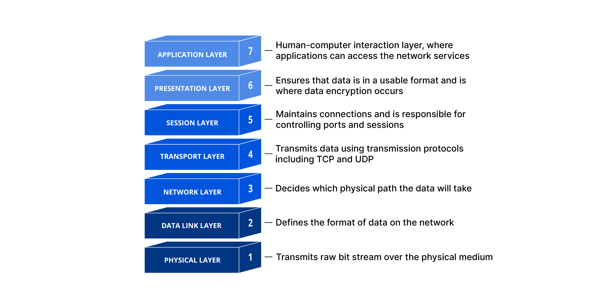

2. Networking Workflow
Neworking Models
Two networking models describe the communication and transfer of data from one host to another, called ISO/OSI model(Open Systems Interconnection) and the TCP/IP model.

Packet Transfer
-
different layer accept data from different format called
protocol data unit(pdu).
-
During the transmission, each layer adds a
headerto thePDUfrom the upper layer, which controls and identifies the packet. - this process is called
Encapsulation, the header and the data together form the PDU for the next layer.
The OSI Model

When an application sends a packet to the other system, the system works the layers shown above from layer 7 down to layer 1, and the receiving system unpacks the received packet from layer 1 up to layer 7.
The TCP/IP Model
The term TCP/IP stands for the two protocols Transmission Control Protocol (TCP) and Internet Protocol (IP). IP is located within the network layer (Layer 3) and TCP is located within the transport layer (Layer 4) of the OSI layer model.
| Layer | Function |
|---|---|
4.Application |
The Application Layer allows applications to access the other layers' services and defines the protocols applications use to exchange data. |
3.Transport |
The Transport Layer is responsible for providing (TCP) session and (UDP) datagram services for the Application Layer. |
2.Internet |
The Internet Layer is responsible for host addressing, packaging, and routing functions. |
1.Link |
The Link layer is responsible for placing the TCP/IP packets on the network medium and receiving corresponding packets from the network medium. TCP/IP is designed to work independently of the network access method, frame format, and medium. |
The most important tasks of TCP/IP are:
| Task | Protocol | Description |
|---|---|---|
Logical Addressing |
IP |
Due to many hosts in different networks, there is a need to structure the network topology and logical addressing. Within TCP/IP, IP takes over the logical addressing of networks and nodes. Data packets only reach the network where they are supposed to be. The methods to do so are network classes, subnetting, and CIDR. |
Routing |
IP |
For each data packet, the next node is determined in each node on the way from the sender to the receiver. This way, a data packet is routed to its receiver, even if its location is unknown to the sender. |
Error & Control Flow |
TCP |
The sender and receiver are frequently in touch with each other via a virtual connection. Therefore control messages are sent continuously to check if the connection is still established. |
Application Support |
TCP |
TCP and UDP ports form a software abstraction to distinguish specific applications and their communication links. |
Name Resolution |
DNS |
DNS provides name resolution through Fully Qualified Domain Names (FQDN) in IP addresses, enabling us to reach the desired host with the specified name on the internet. |